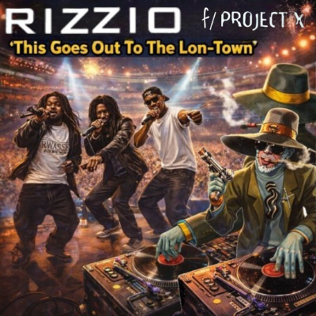

Straight from The Fucking Lon-Town
Slow down for da hoe down
Yeah always niggas tryin to say something man
Listen, you ready? Get ready for the Chevy
Yeah, I'm in there
Rock steady hell yeah
Niggas, keep their heads ringing
The revolution
Woo! Yeah
Rizzio da Rizzo alias Sir Rizz
Lon-Town gangsta gonna run tings
Booga, booga
Journey through The Lon-Town
Just to see what's going down on the subway,
Going all bound, partying all around
It's Saturday night, it's gonna be all right
It's not alright for fightin' because we do the right thing
We're going out there to see the girlies shake their rear,
Then we go down to Tottenham, that's where I come from
Journey south a little
Then the fake gun man, watch out, you can't have fun, man!
Going through the places, seeing many faces in Finsbury Park,
But the scene is dark
Listen, well, what can you say anyway?
Anyway, we're headin' thru
The night is young, we are too
We're going on to Clapton, then on to Leyton
Don't forget Leytonstone
I'll get mine in your home
Go across London Bridge, cross The River Thames,
Yinka goes "Yo, let's to Kennigton?"
Stone says "No, to Brixton,
That's the place we gotta be
Because there's plenty of honeys, for us to please!"
You ho, you know how it go
The place slamming and the place is jamming
The place is crammed and we love it in the south
This goes out to The Lon-Town, whoa
And this goes out to The Lon-Town, you know that
This goes out to The Lon-Town, you know
And this goes out to The Lon-Town, yeah, yeah, yeah
I wanna tell you a little something about The Shitty I live in
I never give up or give in, though I'm driven to the edge of distraction
My own peace for action, I need some brain food action,
That's why I'm calling not faxin, my brethren
You gonna heaven send me, 'cause man,
I usually come to you for stress relief
We're not the type to make our money out in the road
Like those selling incense on West Green and Walworth Road
I know, people give money to tramps,
Traveling Caucasians with eyes light up like lamps
When they see you at Turnpike Lane, even Waterloo,
They con black people out their money for food
It's too rude, 'cause their people learn to rob and steal
First they conceal, but I'll give you the real
There was a black woman shot dead in a stairwell
She was a mother of two, she had no time to say farewell
So pray tell, while we have to sing these sad songs
In Boroughs, where Big Ben never bongs in the fog
I like to get down in the park, come summertime,
'Cause you know it don't get dark 'til late
So bodies gyrate from Brixton to Brockwell,
So I change tubes at Stockwell
You see another sad scene, my people come from Africa,
Here just to clean
I mean, I met famous brothas, fulltime baby mothers,
As well as the intelligent sisters and brothers
Keep your head above water and don't drown,
'Cause it's sink or sink or sink or swim in this town I said-
This goes out to The Lon-Town, whoa
And this goes out to The Lon-Town, you know that
This goes out to The Lon-Town, you know
And this goes out to The Lon-Town, and i'm in!
You know
Tottenham town is trendy, but too crazy for me
I like to get down with the girls that want to bogle for free
Like the Hackney boys kicking summertime better still
Running up to all dem spots, find yourself in Notting Hill
Carnival runnin still, got the woman plenty skills
In the race for the chase, man of vice,
Catch a taste of the action, no relaxing like the government is taxing
Guys walk on by, sell highs that multiply,
Cash is light multiply, trading cash and for clash
Cars go dash in a flash, what? Mind you don't crash
Yeah, people who we meeting, check up my man in the evening
So glad work proceeds the best to check for pussy
Galore coming raw, we stop party and bust off in the morning
So stop that yawning
You say me wanna, plenty gyal,
'Cause consider this is a warning
I'm crawling, no, not crawling,
That weed has got me calling for my better woman session,
'Cause it's time to have to flex
'Cause I long and got to stretch, now my mind in a mess
So make you get your quest, so the next time is a quest
So review again what's new again,
Another Lon-Ton hooligan
This goes out to The Lon-Town, whoa
This goes out to The Lon-Town
My man's goin' solo!
You know that it's
This goes out to The Lon-Town